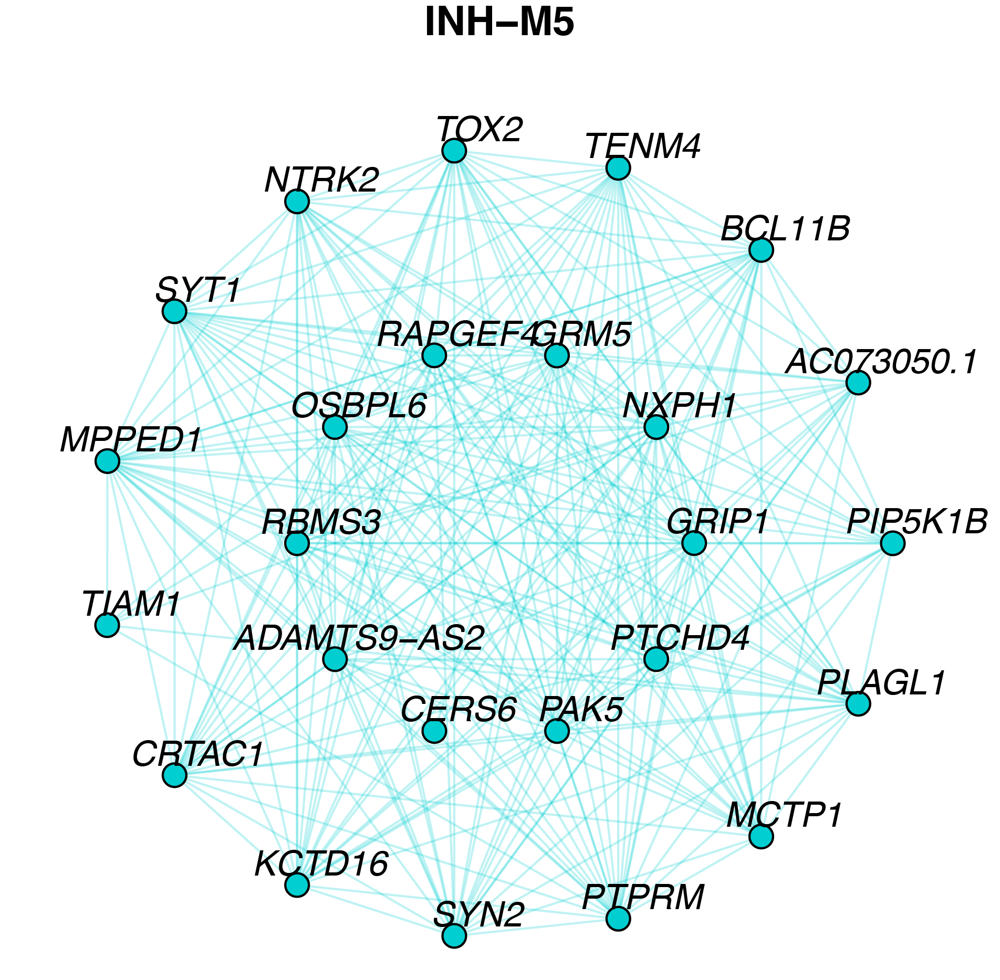
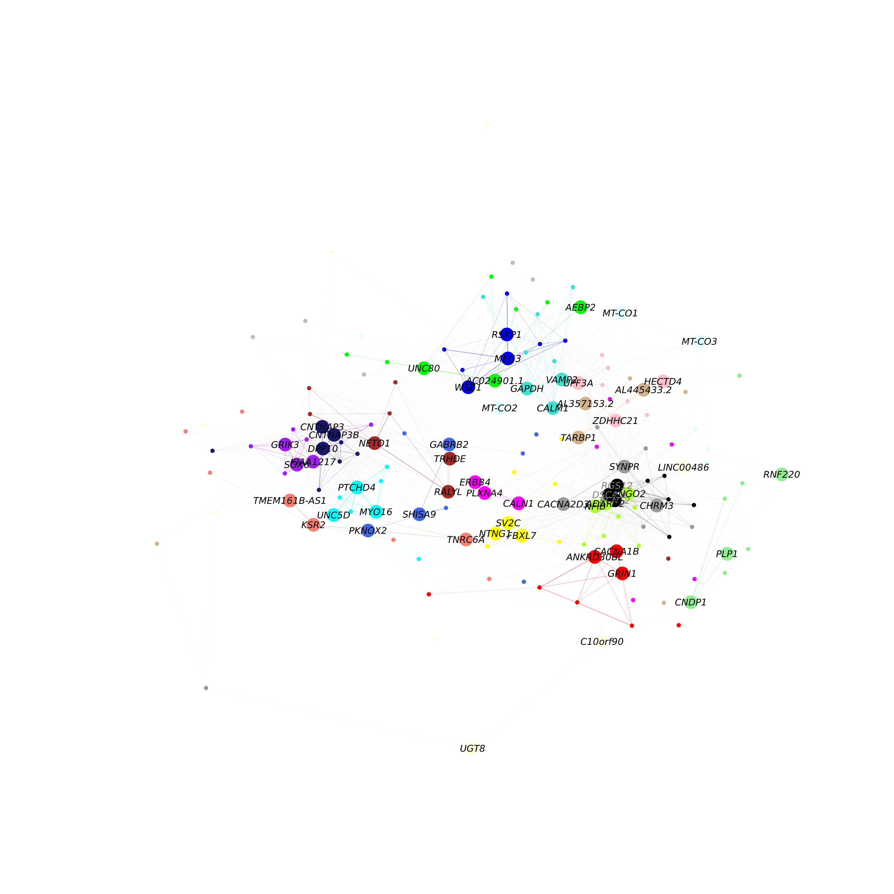

Network Visualization
network_visualizations.RmdIn this tutorial, we demonstrate several ways of visualizing the co-expression networks made with scWGCNA. Before starting this tutorial, make sure that you have constructed the co-expression network as in the scWGCNA basics. This tutorial covers the three main network visualizations within scWGCNA:
-
ModuleNetworkPlot, visualizes a separate network plot for each module, showing the top 25 genes by kME. -
HubGeneNetworkPlot, visualizes the network comprisng all modules with a given number of hub genes per module. -
ModuleUMAPPlot, visualizes all of the genes in the co-expression simultaneously using the UMAP dimensionality reduction algorithm.
Before we visualize anything, we first need to load the data and the required libraries.
# single-cell analysis package
library(Seurat)
# plotting and data science packages
library(tidyverse)
library(cowplot)
library(patchwork)
# co-expression network analysis packages:
library(WGCNA)
library(scWGCNA)
# network analysis & visualization package:
library(igraph)
# using the cowplot theme for ggplot
theme_set(theme_cowplot())
# set random seed for reproducibility
set.seed(12345)
# load the Zhou et al snRNA-seq dataset
seurat_obj <- readRDS('data/Zhou_control.rds')
ModuleNetworkPlot
Here we demonstrate using the ModuleNetworkPlot function to visualize the network underlying the top 25 hub genes for each module. By default, this function creates a new folder called “ModuleNetworks”, and generates a .pdf figure for each module. There are a few parameters that you can adjust for this function:
ModuleNetworkPlot(seurat_obj)Here we can see what one of these network plots looks like:

In this network, each node represents a gene, and each edge represents the co-expression relationship between two genes in the network. Each of these module network plots are colored based on the color column in the scWGCNA module assignment table GetModules(seurat_obj). The top 10 hub genes by kME are placed in the center of the plot, while the remaining 15 genes are placed in the outer circle.
Optionally, certain visualization parameters can be changed in this plot:
-
edge.alpha: determines the opacity of the network edges -
vertex.size: determines the size of the nodes -
vertex.label.cex: determines the font size of the gene label
HubGeneNetworkPlot
Here we will make a network plot combining all of the modules together using the HubGeneNetworkPlot function. This function takes the top n hub genes as specified by the user, and other randomly selected genes, and constructs a joint network using the force-directed graph drawing algorithm. For visual clarity, the number of edges in the network can be downsampled using the edge_prop parameter. In the following example, we visualize the top 3 hub genes and 6 other genes per module.
# hubgene network
png(paste0('network_vis/test_hubgene_graph.png'), width=7, height=7, units='in', res=400)
HubGeneNetworkPlot(
seurat_obj,
n_hubs = 3, n_other=5,
edge_prop = 0.75,
mods = 'all'
)
dev.off()
As in the previous network plot, each node represents a gene and each edge represents a co-expression relationship. In this network, we color intramodular edges with the module’s color, and intermodular edges gray. The opacity of edges in this network is scaled by the strength of the co-expression relationship. Additional network layout settings can be passed to the layout_with_fr function in igraph. The user can also specify return_graph = TRUE to return the igraph object to plot using their own custom code.
g <- HubGeneNetworkPlot(seurat_obj, return_graph=TRUE)
ModuleUMAPPlot
Previously we visualized a subset of the co-expression network with an emphasis on the hub genes. Here, we use an alternative approach to visualize all genes in the co-expression network simultaneously. UMAP is a suitable method for visualizing high-dimensional data in two dimensions.
scWGCNA includes the function RunModuleUMAP to run the UMAP algorithm on the scWGCNA topological overlap matrix (TOM). For the UMAP analysis, we subset the columns in the TOM to only contain the top n hub genes by kME for each module, as specified by the user. Therefore, the organization of each gene in UMAP space is dependent on that gene’s connectivity with the network’s hub genes.
The following code demonstrates using the RunModuleUMAP function with 10 hub genes per module:
seurat_obj <- RunModuleUMAP(
seurat_obj,
n_hubs = 10, # number of hub genes to include for the UMAP embedding
n_neighbors=15, # neighbors parameter for UMAP
min_dist=0.1 # min distance between points in UMAP space
)